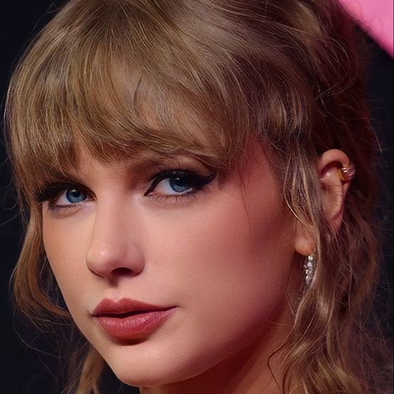

Essa é Taylor Swift
Ela é uma cantora
Seu sonho de ser cantora veio de sua avó, cantora de ópera. Começou a compor e cantar com 12 anos,
e com 14 se mudou para Nashville, procurando uma gravadora. Queria ser uma estrela do country.
Assinou um contrato aos 16, no qual estavam alguns de seus maiores sucessos, como as músicas 22, Shake It Off, e Look What You Made Me Do.
Após o fim do contrato, suas músicas foram vendidas, o que deu início ao processo de regravações, para recuperar sua arte.
Sob o novo contrato da Republic Records, Taylor lançou seus álbuns mais recentes, e vem regravando os álbuns antigos.
Lançou seu primeiro álbum, homônimo, em 2006, o qual recebeu indicação ao Grammy de artista revelação.
Em 2008, seu álbum Fearless teve seus singles Love Story e You Belong With Me no topo das paradas musicais,
além de ser premiado com 4 Grammys, incluindo o prêmio principal, álbum do ano.
Após duras críticas sobre sua habilidade de composição, Taylor lançou, em 2010, seu álbum Speak Now, o qual ela é a única compositora.
Nele, a música Mean recebeu dois gramofones. Em 2012, começou sua transição para o POP com seu álbum RED, com todos os singles
nesse gênero, incluindo seu primeiro top 1 na billboard HOT 100, We Are Never Ever Getting Back Together.
Seu quinto álbum, 1989, homenageia, em seu nome, o ano do nascimento de Swift, e marca o fim da transição de Taylor para
o POP. Além de 3 Grammys, um seu álbum do ano, ela tem também alguns dos maiores sucessos da Taylor, como Shake It Off, Blank Space e Bad
Blood.
Em 2016, a vida da Taylor virou de cabeça para baixo, quando o rapper Kanye West colocou letras misóginas sobre ela
em sua música Famous. A Taylor tentou acusá-lo, mas foi chamada de mentirosa e cobra.
Cancelada, ela sumiu de todos os lugares por mais de um ano, e retornou com o seu single Look What You Made Me Do,
em que ela fala sobre vingança contra West. A música foi o Lead Single do aclamado álbum reputation, divindo espaço
com outras músicas sobre a intriga e músicas sobre seu então namorado Joe Alwin.
Após personificar a maldade da cobra, Taylor lançou o álbum Lover, ainda sobre sua relação com Alwin.
O isolamento em 2020, em função da pandemia de covid-19, levou Taylor a outra mudança de gênero, apostando em dois álbuns
folk lançados sem aviso prévio. Seu primeiro álbum folk, folklore, concedeu à Taylor o título de única mulher
a ganhar 3 vezes o Grammy de álbum do ano. Seu segundo álbum no gênero, evermore, é chamado pela própria Taylor
como "álbum irmão" do seu antecessor.
Após todas as mudanças em estética e gênero, Taylor começou seu projeto de regravações,
com o álbum Fearless (Taylor's Version), contando com 6 músicas originalmente descartadas, entituladas "From The Vault",
e logo lançou também a regravação de RED, com 6 músicas inéditas, as versões em sua voz
de 2 músicas que ela havia composto, mas foram gravadas por bandas de country, além
da versão de 10 minutos de sua música All Too Well, a qual recebeu também um curta-metragem,
seu curta concedeu a ela o recorde de pessoa com mais prêmios de vídeo de ano pelo Video Music Awards (VMAs),
premiação na qual ela anunciou seu décimo álbum, o atual álbum do ano Midnights.
Após o lançamento do Midnights, Taylor iniciou sua turnê The Eras Tour, na qual anunciou os clipes
das músicas Karma (feat. Ice Spicy) e I Can See You, além das regravações de Speak Now e 1989, e vem
promovendo seu novo álbum The Tortured Poets Department, por meio de performances e singles. A turnê
totaliza 5 singles divulgados, Karma, I Can See You, Cruel Summer, Is It Over Now?, e I Can Do It With A Broken Heart.
Suas habilidades
Canto
Composição
Violão
Piano
Teclado
Banjo
Guitarra
Ukulele